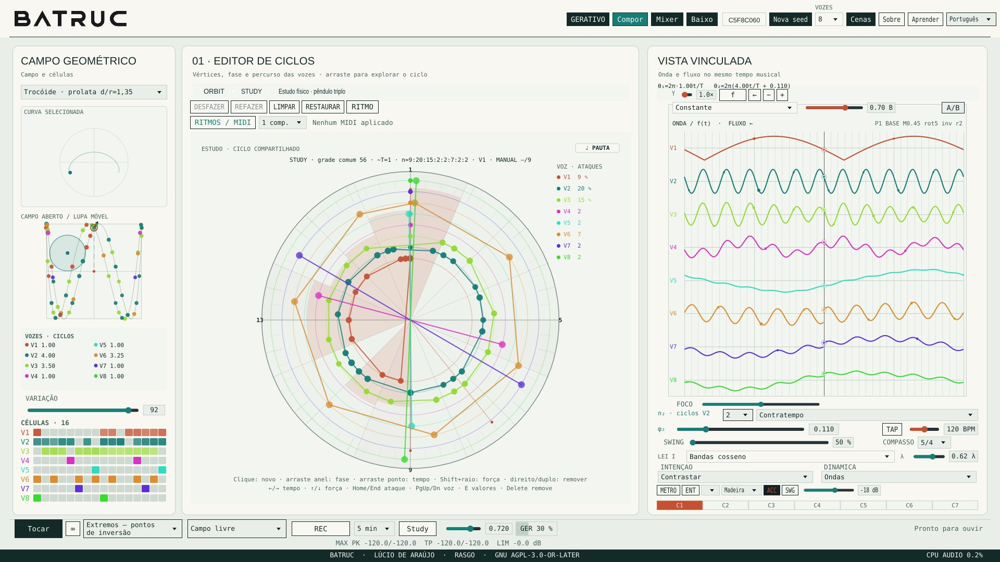

Batruc
Batruc est un instrument de composition rythmique. Des modèles mathématiques et physiques — pendules couplés, billard, figures de Lissajous, séries de Fourier, courbes roulantes — écrivent des rythmes que vous écoutez, modifiez, jouez et portez sur la partition. La génération écrit ; elle ne filtre pas en cachette.
L'interface

Télécharger
Choisissez le paquet de votre système.
Windows
Windows 10 ou 11 — installateur (.exe) ou sans installation (.zip)
macOS
macOS 10.15 ou plus récent, Intel et Apple Silicon
Linux
.deb pour Ubuntu, Debian et Mint ; AppImage ou .tar.gz pour les autres distributions
À la première ouverture, Windows et macOS affichent un avertissement de sécurité : c'est attendu, car l'application ne porte pas la signature payante des deux entreprises. Le guide d'installation indique où cliquer.
Fonctionnement
Écrire
Chaque graine écrit des figures de grosse caisse, caisse claire et charleston à partir d'un modèle physique, avec forme de phrase, ruptures et développement sur sept cycles. Tout reste modifiable dans le Study.
Jouer
Le mode RYTHME joue exactement ce qui est écrit ; le mode GÉNÉRATIF ajoute masques de champ, lois d'intensité et forme, avec une profondeur réglable.
Ornementer
La caisse claire garde ses ornements sur la note — notes fantômes, fla, ra, rufo, ricochet, roulement, cercle, buzz —, et le bouton ORN de chaque stem alterne entre le rythme simple et la caisse complète.
Noter
Une portée de basse, en clé de fa et dans la tonalité de la graine, et une portée de batterie avec signes d'ornement et doigté, toutes deux exportables en MusicXML.
Basse et tonalité
La graine choisit une tonalité — douze toniques et dix modes — et la basse prend une voix propre : une progression de degrés, l'appui d'une partie des frappes de grosse caisse, des réponses dans les creux et des notes de passage avant chaque changement d'accord. La percussion peut aussi suivre la tonalité.
Rythmes et recherche
Batruc travaille avec des sources citées, pas avec des étiquettes toutes faites :
- un catalogue de 1 150 interprétations de batterie du Groove MIDI Dataset (Google, CC BY 4.0), avec origine, licence et attribution conservées dans chaque cellule dérivée ; les étiquettes de style décrivent des interprétations, elles ne définissent pas des traditions ;
- les ornements de caisse claire partent du vocabulaire des 40 rudiments internationaux de la Percussive Arts Society, décrits avec des mots propres ;
- les grooves de caisse claire du frevo, du maracatu et du baião n'utilisent que ce que documente l'étude de Christiano Galvão (Per Musi, 2023) ;
- le microtiming du tarol vient de mesures publiées sur le maracatu de baque solto (ISMIR 2020).
Crédits
Lúcio de Araújo — conception, composition, interface et code. Licence GNU AGPLv3 ou ultérieure ; JUCE sous sa licence AGPLv3. Sources et crédits complets : CREDITS_AND_SOURCES.md.
État
La version 0.1.5 est l'actuelle ; la première publiée fut la 0.1.0, en novembre 2026. Batruc a été compilé, testé et joué sous Linux ; les paquets Windows et macOS sont construits et testés par l'intégration continue et n'ont pas encore été ouverts sur de vraies machines. L'instrument reste en développement, ouvert.